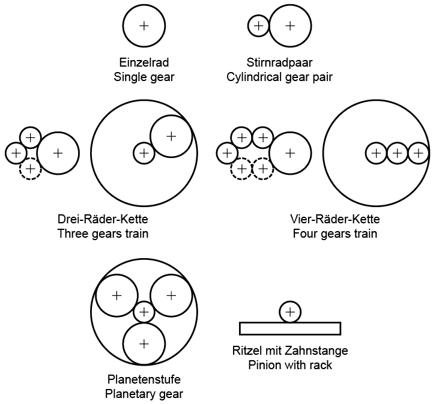

|
|
|


圆柱齿轮
您可以使用 KISSsoft 的圆柱齿轮计算软件来计算一系列不同的配置。
- 单齿轮计算是为计算单个齿轮的几何和检测尺寸而开发的
- 圆柱齿轮副是几何和强度方面最重要的配置。您还可以将其用于附加计算，并同时进行多个单齿轮计算。
- 行星齿轮软件会检查配置的实际方面，并在确定尺寸的同时监控两对齿轮。精细定尺寸功能使您能够快速高效地优化中心距。通常您可以在此输入自己的值。但您必须考虑到，由于无法对行星轮施加扭矩，因此无法对 Wolfrom 传动或 Ravigneaux 齿轮组进行强度分析。
- 三齿轮和四齿轮配置使您能够计算齿轮链，其中扭矩只施加到第一个和最后一个齿轮。
- 双行星齿轮级：您也可以使用四齿轮链来计算双行星齿轮级。但是，如果齿轮 4 是内齿轮（齿数为负），则会进行检查以确定它是否可能是双行星齿轮级（太阳轮位于中心的行星重新定位级）。关于这一点的说明会添加到报告中的“补充数据”部分。如果齿轮 4 是双行星齿轮级，则中心点是在假设 M1 和 M4 重合的情况下计算的。
- 用于齿轮齿条传动的计算在几何计算中包含一个齿条，在强度计算中包含一个齿数无限的圆柱齿轮。
由于不同配置的输入界面非常相似，因此将在下面的章节中一并描述。

图 15.1：圆柱齿轮配置
English Original
Cylindrical gears
You can use KISSsoft's cylindrical gear calculation software to calculate a range of different configurations.
- The single gear calculation has been developed to calculate the geometry and test dimensions of individual gears
- The cylindrical gear pair is the most important configuration for geometry and strength. You can also use it for additional calculations and several individual calculations at the same time.
- The planetary gear software checks the practical aspects of the configuration and monitors both pairs of gears while they are being sized. The Fine Sizing function enables you to optimize the center distance quickly and efficiently. You can usually input your own values here. However, you must take into consideration that, as torque cannot be applied to the planet, it is not possible to perform a strength analysis on a Wolfrom drive or on a Ravigneaux gear set.
- The configurations for three and four gears enable you to calculate a gear wheel chain, in which torque is applied only to the first and last gear.
- Double planetary stages: You can also use the 4-gear chain to calculate a double planetary stage. However, if gear 4 is an internal gear (negative number of teeth) a check is performed to see whether it could be a double planetary stage (planetary repositioning stage with the sun in the center). A note about this is added to the report in the "Supplementary data" section. If gear 4 is a double planetary stage, the center point is calculated under the assumption that M1 and M4 coincide.
- The calculation used for a rack and pinion includes one rack in the geometry calculation and one cylindrical gear with an infinite number of teeth for the strength calculation.
As the input screens for the different configurations are very similar, they are described together in the sections below.
Figure 15.1: Cylindrical gear configurations